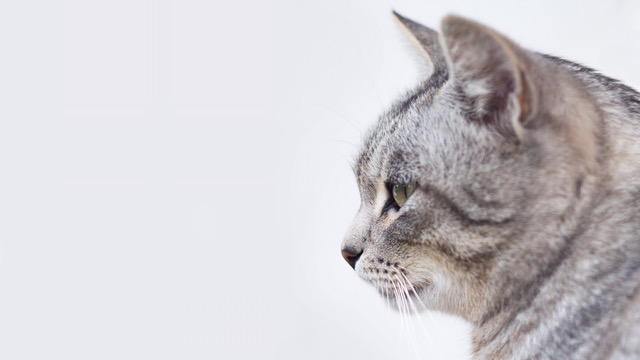

<!-- Create HTML document -->
<!DOCTYPE html>
<!-- Start HTML document in English-->
<html lang="en">
<!-- Head of the HTML document -->
<head>
    <!-- Meta tag for the character set -->
    <meta charset="UTF-8">
    <!-- Title of Images-->
    <title>Images</title>
    <!-- Style tag for the CSS -->
    <style>
    /* Style for the canvas */
    #canvas {
        /* Set the border to 1px black solid */
      border: 1px black solid;
    }
    /* Close the style tag */
  </style>
<!-- Close head-->
</head>
<!-- Body of the HTML document -->
<body>

<!--The source image. Could make invisible with CSS if don't want to see it -->
    <!-- 
<!-- The canvas element with height and width-->
<canvas id="canvas" height="500" width="500"></canvas>
<!-- Script tag for the JavaScript -->
<script>
    // Get the canvas element
  let canvas = document.getElementById("canvas")
    // Create a new image object
  let image = new Image()
    // Set the source of the image
  image.src = "small-cat.jpg"

  // Get the image to draw in the canvas
  // But, we have to make sure the image has loaded before we try and draw it.
  // So find the image element, and use the onload event to be notified that it has loaded.
  // image.addEventListener('load', function(){ ... })
  // image is the HTML image element you want to add the event listener to.
  // addEventListener('load', function(){ ... }) attaches an event listener for the 'load' event.
  // The load event occurs when the image has been completely loaded.
  // The function specified inside the function(){ ... } will be executed when the image is fully loaded
  // You can put any code inside this function to perform actions once the image is ready.  
  image.addEventListener('load', function(){
    // Get the context of the canvas
    context = canvas.getContext("2d")

    // Draw image. drawImage works like a stamp. Specify the x,y of the top left position.
    // context.drawImage(image, 0, 0)
    // Draws the image at the coordinates (0, 0) on the canvas, starting from the top-left corner.
    // context.drawImage(image, 300, 100)
    // Draws the image again at the coordinates (300, 100) on the canvas, starting from the position 300 pixels from the left and 100 pixels from the top.
    // context.drawImage(image, 150, 300)
    // Draws the image once more at the coordinates (150, 300) on the canvas, starting from the position 150 pixels from the left and 300 pixels from the top.
    context.drawImage(image, 0, 0)
    context.drawImage(image, 300, 100)
    context.drawImage(image, 150, 300)

  })
// Close the script tag
</script>
<!-- Close the body tag -->
</body>
<!-- Close the HTML document -->
</html>